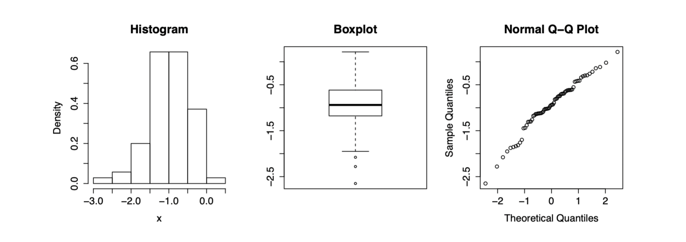

Figure 1 shows a histogram, a boxplot, and a normal QQ-plot of a sample x.

- Describe briefly what the boxplot tells you about the location, spread and shape
of the underlying data.
- From the boxplot we can infer that the data has a median around −1. The 0.25-quantile of the sample is around −1.2 and the 0.75-quantile is around −0.6. Therefore, the interquartile range is approximately −0.6 − (−1.2) = 0.6, which describes the spread of the data. The boxplot indicates that the data is symmetric, with three outliers on the left-hand side.
- What does the area of a bar in the histogram represent?
- The area of a bar in the histogram is equal to the relative frequency of the data in the interval below the bar.
- What can you deduce form the QQ-plot with respect to the tails of the underlying
distribution of the data compared to the tails of a normal distribution?
- When we draw a (imaginary) straight line through the middle of the QQ plot, we see that the left part of the plot is below this straight line. Therefore, the left tail of the underlying distribution of the data is heavier than that of a normal distribution.